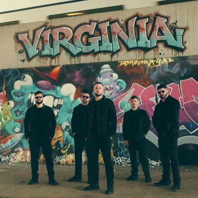

Carlos Pessin
Music Producer
Musician and music producer exploring rock, vocals, songwriting, and independent releases.
Projects
Music Producer
Musician and music producer exploring rock, vocals, songwriting, and independent releases.